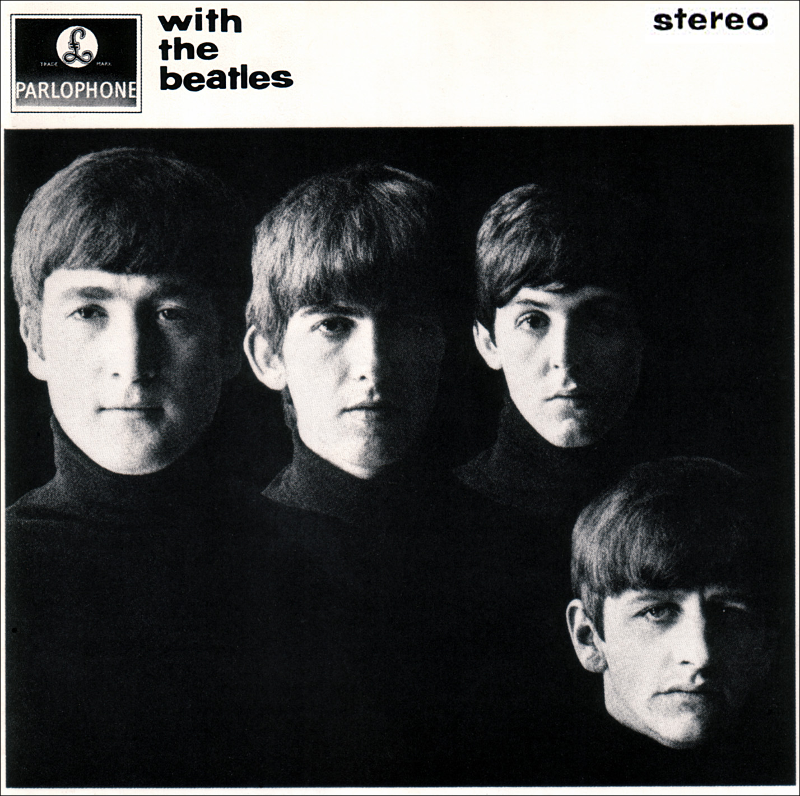
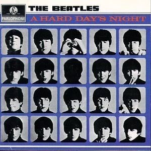
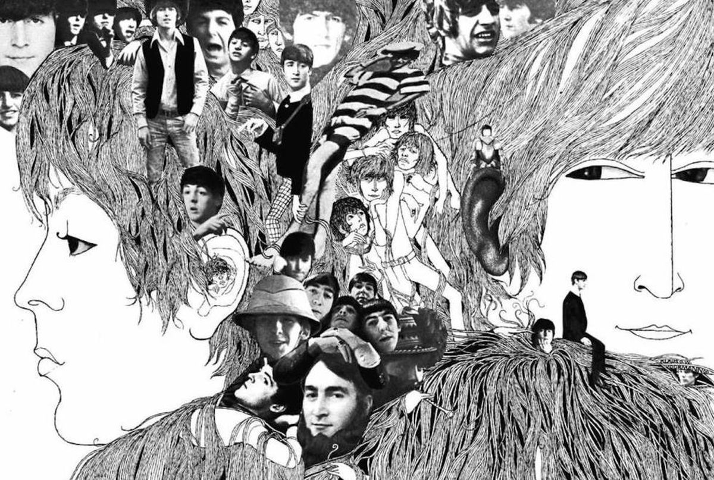
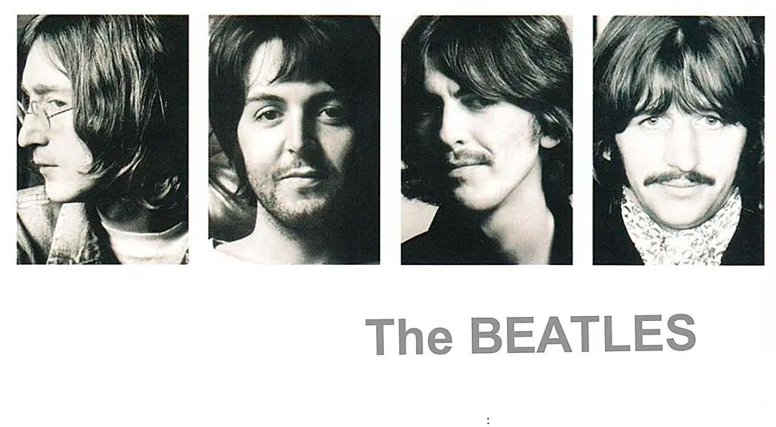
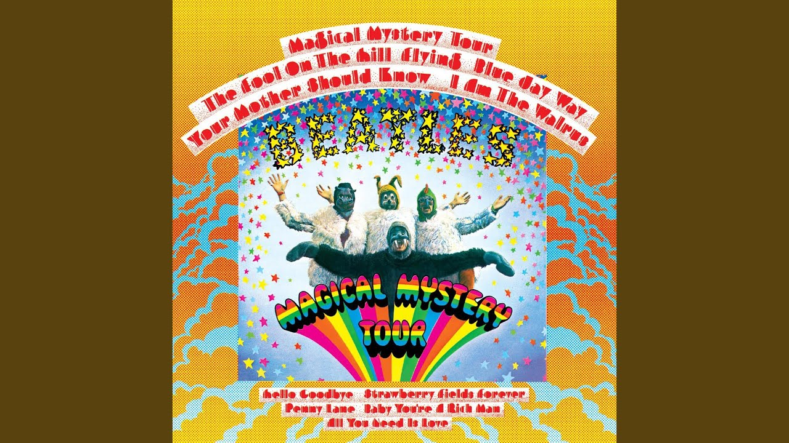
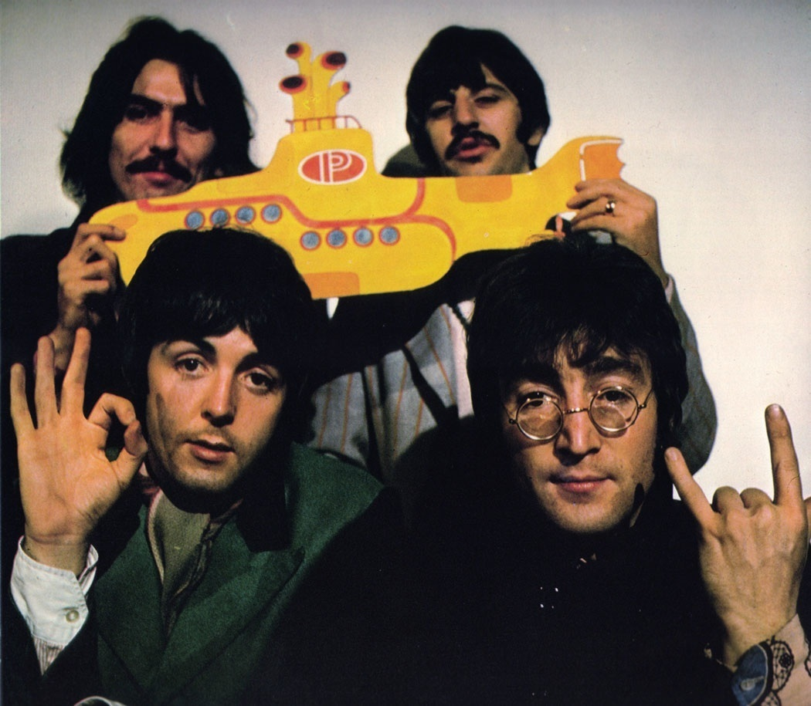
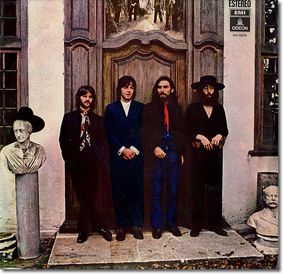
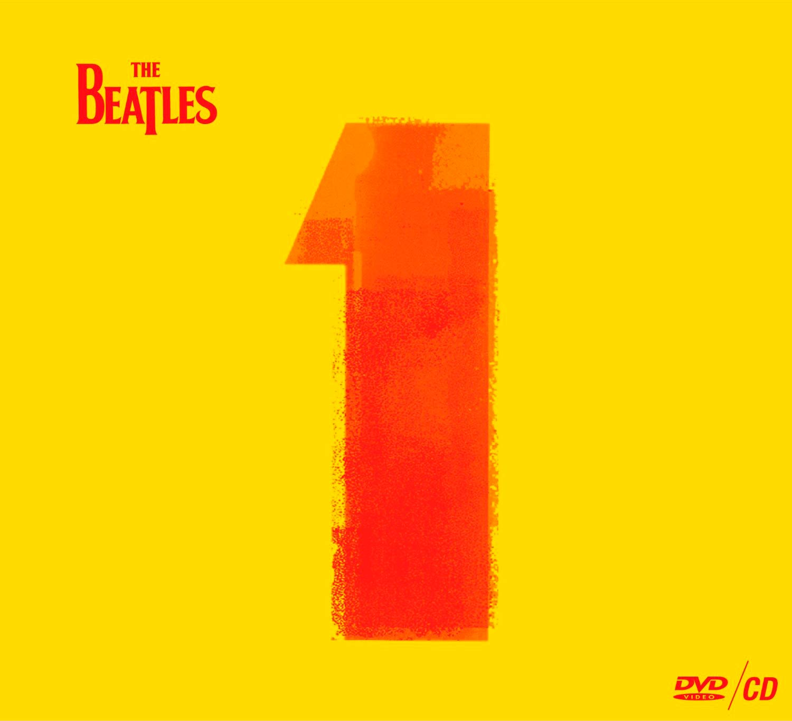

Es el álbum debut de The Beatles y el inicio de lo que dio en llamarse la beatlemanía. Publicado el 22 de marzo de 1963

With The Beatles
With the Beatles es el segundo álbum de estudio de la banda británica de rock, The Beatles, empezado a grabar apenas cuatro meses después de haberse publicado Please Please Me, y editado el 22 de noviembre de 1963.

A Hard Day´s Night
A Hard Day's Night es el tercer álbum de estudio de la banda británica de rock, The Beatles, publicado el 10 de julio de 1964 por la compañía discográfica Parlophone.
Beatles For Sale
Beatles for Sale es el cuarto álbum de estudio de la banda británica de rock, The Beatles, publicado el 4 de diciembre de 1964 por la compañía discográfica Parlophone, con el número de catálogo PMC 1240.
Help!
Help! es el quinto álbum de estudio de la banda británica de rock, The Beatles, al mismo tiempo que banda sonora de su película de mismo título.
Rubber Soul
Rubber Soul es el sexto álbum de estudio de la banda británica de rock The Beatles, lanzado el 3 de diciembre de 1965. Producido por George Martin, fue grabado en solo cuatro semanas para así poder aprovechar el mercado navideño.

Revolver
Revolver es el séptimo álbum de estudio de la banda británica de rock The Beatles lanzado el 5 de agosto de 1966 por EMI. Fue el último álbum lanzado antes de que la banda decidiera abandonar los escenarios y las giras, a favor de la experimentación en los estudios de grabación y mejoramiento de su estilo.

White album
The Beatles, también conocido coloquialmente como White Album, o el Álbum Blanco en español, es el noveno álbum de estudio de la banda británica de rock The Beatles, lanzado el 22 de noviembre de 1968.

Magical Mystery Tour
Magical Mystery Tour es un disco de la banda de rock inglesa The Beatles que fue lanzado como EP doble en el Reino Unido y LP en los Estados Unidos. Incluye la banda sonora de la película para televisión de 1967 del mismo nombre.
Sgt. Pepper's
Sgt. Pepper's es una canción escrita por Paul McCartney pero acreditada a Lennon-McCartney, grabada en 1967 en el EMI Studios.
Abbey Road
Abbey Road es el undécimo álbum de estudio publicado por la banda británica de rock The Beatles, sería lanzado el 26 de septiembre de 1969 en Reino Unido por Apple Records.

Yellow Submarine
Yellow Submarine es el décimo álbum de estudio de la banda de rock inglesa The Beatles, lanzado el 13 de enero de 1969 en los Estados Unidos y el 17 de enero de 1969 en el Reino Unido.

Hey Jude
Hey Jude es un álbum recopilatorio de la banda británica The Beatles, publicado el 26 de febrero de 1970 por la compañía discográfica Apple Records..
Let it be
Let It Be es el duodécimo y último álbum de estudio de la banda de rock inglesa The Beatles. Fue lanzado el 8 de mayo de 1970, días después de que se hiciera oficial la salida de Paul McCartney de la banda, y con ella la disolución pública del grupo.

1
Es una recopilación de 27 de los sencillos de The Beatles que alcanzaron la primera posición de las listas oficiales pop del Reino Unido y/o Estados Unidos. Con la asistencia del productor George Martin, fue publicado el 13 de noviembre de 2000.